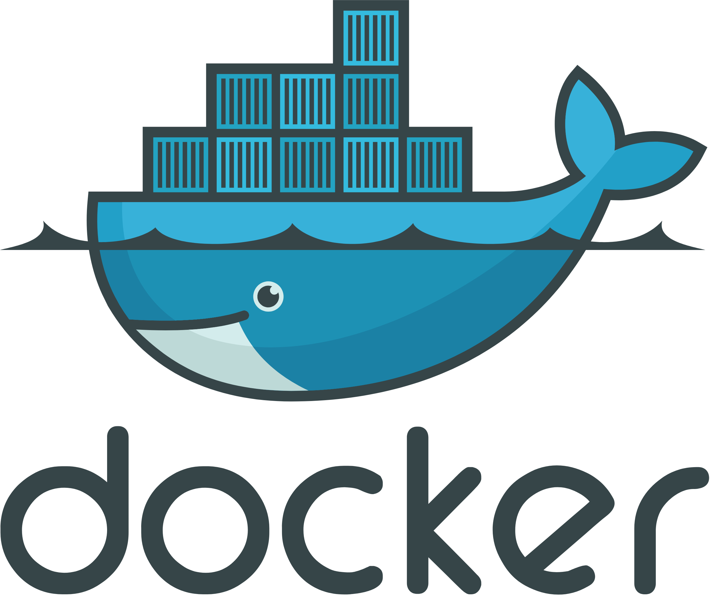

Docker Schulung¶ Einführung in Docker Installation auf Windows Container vs. Images Port Mapping in Docker Container im Hintergrund ausführen Containerinhalt live bearbeiten Tagging von Docker-Images Übung Docker Runtimes Slim- und Alpine-Images Datenpersistenz in Docker Eigene Docker-Images erstellen - Einstieg Hosting Docker Layers Eigene Docker-Images erstellen - Erweitert Docker Compose Devcontainer  Video